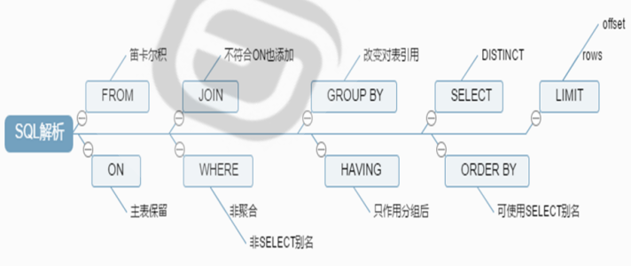

背景 ：报全程班和单就业的小伙伴，本周建议学习内容：第二十三天、第二十四天、第二十五天、第二十六天。
请同学们完成作业后，将博客作业提交到此链接：https://www.wjx.top/vj/POHTQOH.aspx
章节内容 第二十三天
作业： 1、简述DDL,DML,DCL,DQL，并且说明mysql各个关键字查询时候的先后顺序 DDL: Data Defination Language 数据定义语言。
DML: Data Manipulation Language 数据操纵语言。
DCL：Data Control Language 数据控制语言。
DQL：Data Query Language 数据查询语言
关键字包含：
WHERE：按数值过滤查找相应行。
GROUP BY：根据指定的条件把查询结果进行“分组”以用于做“聚合”运算，一旦分组，select语句后只跟分组的字段和聚合函。
HAVING: 对分组聚合运算后的结果指定过滤条件。
LIMIT[[offset,]row_count]: 对查询的结果进行输出行数数量限制，跳过offet，显示row_count。
SELECT 语句处理的顺序：
FROM Clause --> WHERE Clause --> GROUP BY --> HAVING Clause --> SELECCT --> ORDER BY --> LIMIT

2、自行设计10个sql查询语句，需要用到关键字[GROUP BY/HAVING/ORDER BY/LIMIT]，至少同时用到两个。 1 2 3 4 5 6 7 8 9 10 11 12 13 14 15 16 17 18 19 20 21 22 23 24 25 26 27 28 29 30 31 32 33 34 35 36 37 38 39 40 41 42 43 44 45 46 47 48 49 50 51 52 53 54 55 56 57 58 59 60 61 62 63 64 65 66 67 68 69 70 71 72 73 74 75 76 77 78 79 80 81 82 83 84 85 86 87 88 89 90 91 92 93 94 95 96 97 98 99 100 101 102 103 104 105 106 107 108 109 110 111 112 113 114 115 116 117 118 119 120 121 122 123 124 125 126 127 128 129 130 131 132 133 134 135 136 137 138 139 140 141 142 143 144 145 146 147 148 149 150 151 152 153 154 155 156 157 158 159 160 161 162 163 164 165 166 167 mysql> use hellodb; Tables_in_hellodb | classes | coc | courses | scores | students | teachers | toc |* from students; StuID | Name | Age | Gender | ClassID | TeacherID | 1 | Shi Zhongyu | 22 | M | 2 | 3 | 2 | Shi Potian | 22 | M | 1 | 7 | 3 | Xie Yanke | 53 | M | 2 | 16 | 4 | Ding Dian | 32 | M | 4 | 4 | 5 | Yu Yutong | 26 | M | 3 | 1 | 6 | Shi Qing | 46 | M | 5 | NULL | 7 | Xi Ren | 19 | F | 3 | NULL | 8 | Lin Daiyu | 17 | F | 7 | NULL | 9 | Ren Yingying | 20 | F | 6 | NULL | 10 | Yue Lingshan | 19 | F | 3 | NULL | 11 | Yuan Chengzhi | 23 | M | 6 | NULL | 12 | Wen Qingqing | 19 | F | 1 | NULL | 13 | Tian Boguang | 33 | M | 2 | NULL | 14 | Lu Wushuang | 17 | F | 3 | NULL | 15 | Duan Yu | 19 | M | 4 | NULL | 16 | Xu Zhu | 21 | M | 1 | NULL | 17 | Lin Chong | 25 | M | 4 | NULL | 18 | Hua Rong | 23 | M | 7 | NULL | 19 | Xue Baochai | 18 | F | 6 | NULL | 20 | Diao Chan | 19 | F | 7 | NULL | 21 | Huang Yueying | 22 | F | 6 | NULL | 22 | Xiao Qiao | 20 | F | 1 | NULL | 23 | Ma Chao | 23 | M | 4 | NULL | 24 | Xu Xian | 27 | M | NULL | NULL | 25 | Sun Dasheng | 100 | M | NULL | NULL | Tables_in_hellodb | classes | coc | courses | scores | students | teachers | toc |* from scores; ID | StuID | CourseID | Score | 1 | 1 | 2 | 77 | 2 | 1 | 6 | 93 | 3 | 2 | 2 | 47 | 4 | 2 | 5 | 97 | 5 | 3 | 2 | 88 | 6 | 3 | 6 | 75 | 7 | 4 | 5 | 71 | 8 | 4 | 2 | 89 | 9 | 5 | 1 | 39 | 10 | 5 | 7 | 63 | 11 | 6 | 1 | 96 | 12 | 7 | 1 | 86 | 13 | 7 | 7 | 83 | 14 | 8 | 4 | 57 | 15 | 8 | 3 | 93 | name | age | Yu Yutong | 26 | Xu Xian | 27 | Ding Dian | 32 | Tian Boguang | 33 | Shi Qing | 46 | Xie Yanke | 53 | Sun Dasheng | 100 | classid | avg(age) | NULL | 63.5000 | 2 | 36.0000 | 5 | 46.0000 | avg(age) | 27.4000 |* from students where age > (select avg(age) from students) order by Age; StuID | Name | Age | Gender | ClassID | TeacherID | 4 | Ding Dian | 32 | M | 4 | 4 | 13 | Tian Boguang | 33 | M | 2 | NULL | 6 | Shi Qing | 46 | M | 5 | NULL | 3 | Xie Yanke | 53 | M | 2 | 16 | 25 | Sun Dasheng | 100 | M | NULL | NULL | name | age | classid | Ding Dian | 32 | 4 | Tian Boguang | 33 | 2 | Shi Qing | 46 | 5 | Xie Yanke | 53 | 2 | Sun Dasheng | 100 | NULL |* ) from students group by classid order by count(* ) desc limit 5; classid | count(*) | 1 | 4 | 4 | 4 | 3 | 4 | 6 | 4 | 2 | 3 |< 18; +---------+-----+ | classid | age | +---------+-----+ | 7 | 17 | | 3 | 17 | +---------+-----+ 2 rows in set (0.00 sec)
3、xtrabackup备份和还原数据库练习 xtrabackup：由Percona提供支持对InnoDB做热备(物理备份)的工具，支持完全备份、增量备份，是惟一开源的能够对innodb和xtradb数据库进行热备的工具。
利用xtrabackup8.0 完全，增量备份及还原MySQL：
1 2 3 4 5 6 7 8 9 10 11 12 13 14 15 16 17 18 19 20 21 22 23 24 25 26 27 28 29 30 31 1 备份过程1 ）完全备份：24 -2.4 .20 -1 .el8.x86_64.rpm/backup/ /backup/ base2 ）第一次修改数据3 ）第一次增量备份/backup/i nc1 --/backup/ base4 ）第二次修改数据5 ）第二次增量/backup/i nc2 --/backup/i nc16 ）[root@centos8 ~]#scp -r /backup/ * 目标主机:/backup/ /backup/ {base，inc1，inc2}2 还原过程1 ）预准备完成备份，此选项--apply-log-only 阻止回滚未完成的事务24 -2.4 .20 -1 .el8.x86_64.rpm/backup/ base2 ）合并第1 次增量备份到完全备份/backup/ base /backup/i nc13 ）合并第2 次增量备份到完全备份：最后一次还原不需要加选项--apply-log-only/backup/ base --incremental�dir=/backup/i nc24 ）复制到数据库目录，注意数据库目录必须为空，MySQL服务不能启动copy -back --target-dir=/backup/ base5 ）还原属性：/var/ lib/mysql6 ）启动服务：
4、实现mysql主从复制，主主复制和半同步复制 主从复制 主从架构实现读写分离，主节点只负责写，从节点只负责读，每个节点都有相同的数据集，向外扩展，基于二进制日志的单向复制
1 2 3 4 5 6 7 8 9 10 11 12 13 14 15 16 17 18 19 20 21 22 23 24 25 26 27 28 29 30 31 32 33 34 35 36 37 38 39 40 41 42 43 44 45 46 47 48 49 50 51 52 53 54 55 56 57 58 59 60 61 62 63 64 65 66 67 68 69 70 71 72 73 74 75 76 77 78 79 80 81 82 83 84 85 86 87 88 89 90 91 92 93 #主节点[mysqld] mysql> show master logs; +--------------------+-----------+-----------+ | Log_name | File_size | Encrypted | +--------------------+-----------+-----------+ | centos8-bin.000002 | 156 | No | +--------------------+-----------+-----------+ 'repl' @'10.0.0.%' ;*.* to 'repl' @'10.0.0.%' ;[mysqld] _password中指定复制账号的密码，本次实验中未设置密码，所以省略 mysql> change master to master_host='10.0.0.150', master_user='repl' , master_port=3306, master_log_file='centos8-bin.000002', master_log_ pos=156;*************************** 1. row ***** ***** ***** ***** ***** ** Slave_IO_State: Waiting for source to send event Master_Host: 10.0.0.150 Master_User: repl Master_Port: 3306 Connect_Retry: 60 Master_Log_File: centos8-bin.000002 Read_Master_Log_Pos: 612 Relay_Log_File: centos8-relay-bin.000002 Relay_Log_Pos: 782 Relay_Master_Log_File: centos8-bin.000002 Slave_IO_Running: Yes #主从复制需要这两项线程 Slave_SQL_Running: Yes #查看是否启动可判定配置是否成功 mysql> show databases; +--------------------+ | Database | +--------------------+ _schema | | mysql | | performance_ schema || sys | +--------------------+ 'zhangsan' ,20);'lisi' ,22);mysql> select * from students; +-------+----------+------+ | stuid | name | age | +-------+----------+------+ | 2 | lisi | 22 | +-------+----------+------+
主主复制 两个节点都可以读写数据，并且互相同步。相当于两个节点互为主从。
双主架构容易产生数据不一致问题，同时进行某一操作时会导致产生冲突，之后无法进行任何操作。因此数据库实际使用时不会开启多个主节点，仅在主节点故障时启用另一个主节点替换。
配置过程类似主从架构
1 2 3 4 5 6 7 8 9 10 11 12 13 14 15 16 17 18 19 20 21 22 23 24 25 26 27 28 29 30 31 32 33 34 35 36 37 38 39 40 41 42 43 44 45 46 47 $vim /etc/my.cnfserver-id =150auto_increment_offset =1 #设置自动增长id间隔auto_increment_increment =2 #并不能完全解决双主冲突问题 $systemctl restart mysqldNo |No | user 'repl' @'10.0.0.%' ;to 'repl' @'10.0.0.%' ;$vim /etc/my.cnfserver-id =157auto_increment_offset =1 auto_increment_increment =2 $systemctl restart mysqldto master_host ='10.0.0.150' , master_user ='repl' , master_port =3306, master_log_file ='centos8-bin.000002' , master_log_pos =156;No |to master_host ='10.0.0.157' , master_user ='repl' , master_port =3306, master_log_file ='binlog.000001' , master_log_pos =674;
半同步复制 默认情况下，MySQL的复制功能是异步的，主库把binlog日志发送给从库即结束，并不验证从库是否接收完毕。这意味着当主服务器或从服务器端发生故障时，有可能从服务器没有接收到主服务器发送过来的binlog日志，这就会造成主服务器和从服务器的数据不一致，甚至在恢复时造成数据的丢失。
若采用同步复制，即等到所有从库确认接收完毕后才告知用户成功则等待时间过长，性能不佳。综合考虑安全性和性能则采用半同步，则只要有一个从库确认接收完毕就判断复制成功，若等待时间过长超过设定的阈值也先告知用户成功。
1 2 3 4 5 6 7 8 9 10 11 12 13 14 15 16 17 18 19 20 21 22 23 24 25 26 27 28 29 30 31 32 33 34 35 36 37 38 39 40 41 42 43 44 45 46 47 48 49 50 51 52 53 54 55 56 57 Variable_name | Value | rpl_semi_sync_master_enabled | ON | rpl_semi_sync_master_timeout | 3000 | rpl_semi_sync_master_trace_level | 32 | rpl_semi_sync_master_wait_for_slave_count | 1 | rpl_semi_sync_master_wait_no_slave | ON | rpl_semi_sync_master_wait_point | AFTER_SYNC | Variable_name | Value | rpl_semi_sync_slave_enabled | ON | rpl_semi_sync_slave_trace_level | 32 |@centos8 ~]$vim /etc/my.cnf@centos8 ~]$vim /etc/my.cnf Variable_name | Value | Rpl_semi_sync_slave_status | ON |
5、用mycat实现mysql的读写分离 Mycat是一个开源的分布式数据库系统，是一个实现了MySQL协议的服务器，前端用户可以把它看作是
一个数据库代理（类似于Mysql Proxy），用MySQL客户端工具和命令行访问，而其后端可以用MySQL
原生协议与多个MySQL服务器通信，也可以用JDBC协议与大多数主流数据库服务器通信，其核心功能是
分表分库，即将一个大表水平分割为N个小表，存储在后端MySQL服务器里或者其他数据库里。
Mycat安装和配置 1 2 3 4 5 6 7 8 9 10 11 12 13 14 15 16 17 18 19 20 21 22 23 24 25 26 27 28 29 30 31 32 33 34 [root@localhost ~]$yum install -y java1.6 .7 .6 /20210303094759 /Mycat-server -1.6 .7 .6 -release -20210303094759 -linux.tar.gzserver -1.6 .7 .6 -release -20210303094759 -linux.tar.gz -C /apps/'PATH=/apps/mycat/bin:$PATH' > /etc/profile.d/mycat.shstart wrapper .log INFO | jvm 1 | 2022 /07 /20 21 :21 :55 | MyCAT Server startup successfully. see logs in logs/mycat.log 10.0 .0 .152 -P8066 Warning ] Using a password on the command line interface can be insecure.to the MySQL monitor. Commands end with ; or \g.connection id is 6 Server version : 5.6 .29 -mycat-1.6 .7 .6 -release -20210303094759 MyCat Server (OpenCloudDB)2000 , 2018 , Oracle and /or its affiliates. All rights reserved.is a registered trademark of Oracle Corporation and /or itsof their respectiveType 'help;' or '\h' for help. Type '\c' to clear the current input statement .show databases;DATABASE |
在mycat 服务器上修改server.xml文件配置Mycat的连接信息 1 2 3 4 5 6 7 8 9 10 11 12 13 14 15 16 17 18 19 [root@localhost ~]$vim /apps/mycat/conf/server.xml<property name ="serverPort" > 3306</property > <property name ="handlelDistributedTransactions" > 0</property > #将上面行放在此行前面<property name ="serverPort" > 3306</property > <property name ="managerPort" > 9066</property > <property name ="idleTimeout" > 300000</property > <property name ="authTimeout" > 15000</property > <property name ="bindIp" > 0.0.0.0</property > <property name ="dataNodeIdleCheckPeriod" > 300000</property > #5 * 60 * 1000L; //连<property name ="frontWriteQueueSize" > 4096</property > <property name ="processors" ></property > #--> 删除#后面此部分<user name ="root" > #连接Mycat的用户名<property name ="password" > magedu</property > #连接Mycat的密码<property name ="schemas" > TESTDB</property > #数据库名要和schema.xml相对应
修改schema.xml实现读写分离策略 1 2 3 4 5 6 7 8 9 10 11 12 13 14 15 16 17 18 19 20 #修改多行后最终如下<?xml version="1.0" ?> <!DOCTYPE mycat :schema SYSTEM "schema.dtd" > <mycat:schema xmlns:mycat ="http://io.mycat/" > <schema name ="TESTDB" checkSQLschema ="false" sqlMaxLimit ="100" dataNode ="dn1" ></schema > <dataNode name ="dn1" dataHost ="localhost1" database ="hellodb" /> <dataHost name ="localhost1" maxCon ="1000" minCon ="10" balance ="1" writeType ="0" dbType ="mysql" dbDriver ="native" switchType ="1" slaveThreshold ="100" ><heartbeat > select user()</heartbeat > <writeHost host ="host1" url ="10.0.0.18:3306" user ="root" password ="123456" > <readHost host ="host2" url ="10.0.0.28:3306" user ="root" password ="123456" /></writeHost > </dataHost > </mycat:schema >
主从节点配置 1 2 3 4 5 #主服务器为mycat服务创建账号并授权create user root@'10.0.0.%' identified by '123456' ;GRANT ALL ON *.* TO 'root' @'10.0.0.%' ;privileges ;
在Mycat服务器上连接并测试 1 2 3 4 5 6 7 8 9 10 11 12 13 14 15 16 17 18 19 20 21 22 23 24 25 26 27 @rhel ~]@server_id; @@server_id | 157 |@centos8 ~]$mysql@centos8 ~]$systemctl stop mysqld@rhel ~]@server_id; @@server_id | 150 |